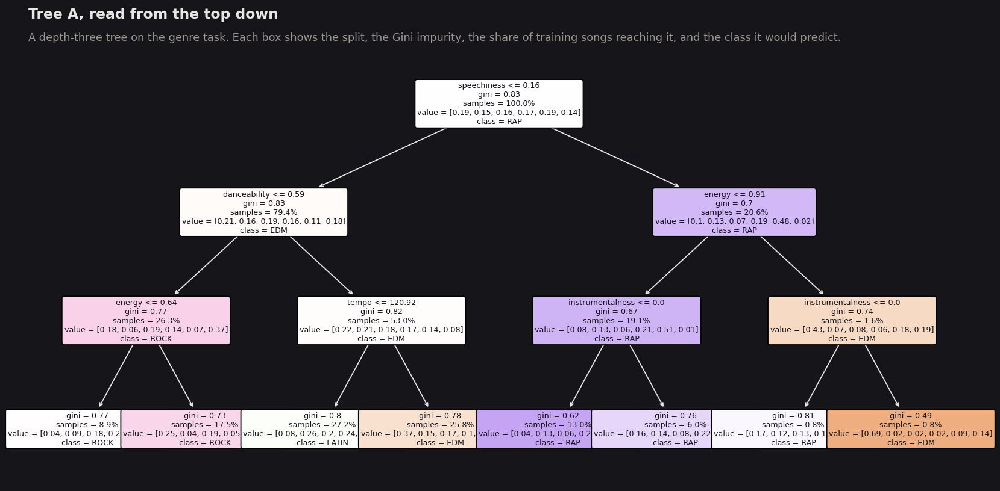
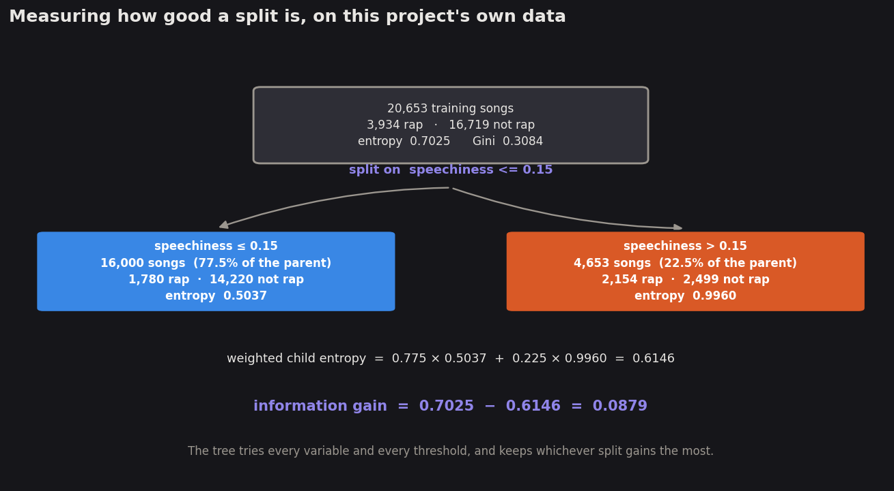
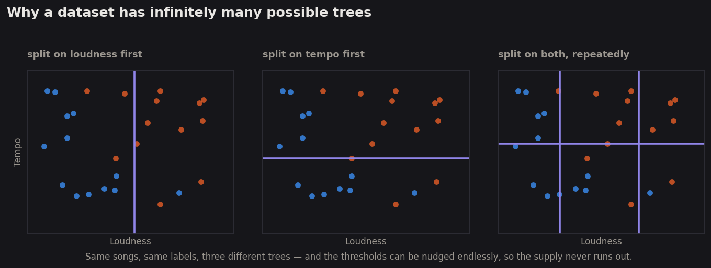
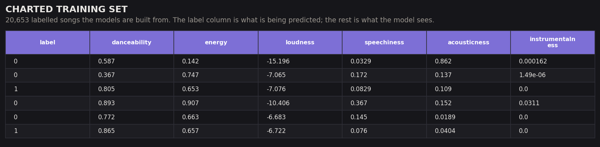
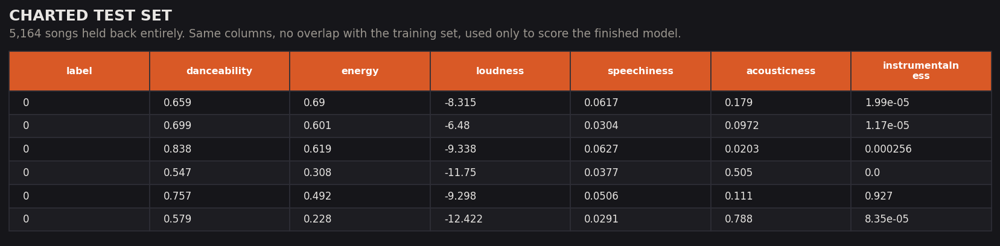
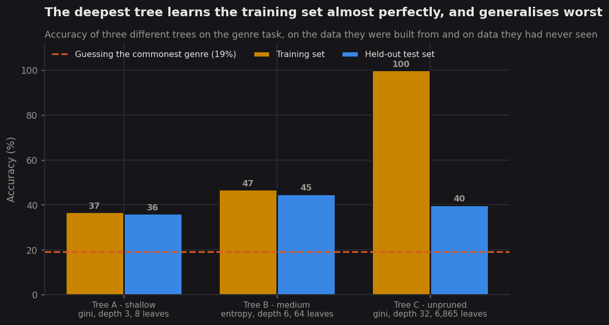
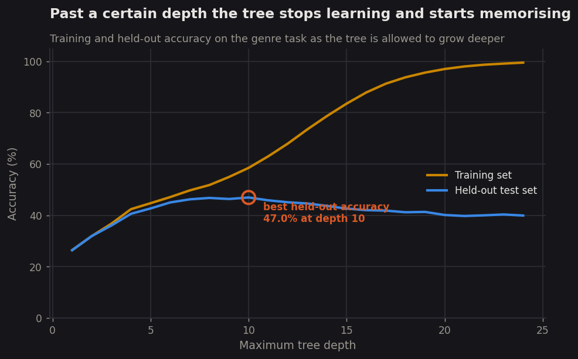
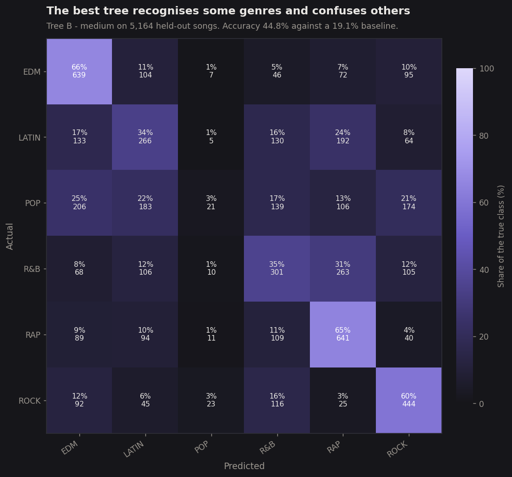
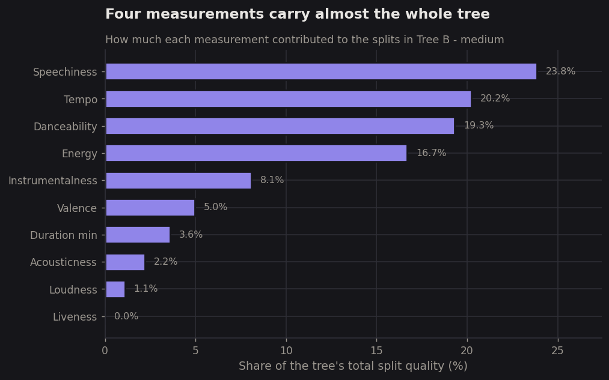

Decision Trees
A decision tree is the rare model you can read. It does not weigh evidence in the abstract: it asks one question at a time, writes its reasoning down as a flowchart, and lets anyone check the logic. That transparency is why it is worth running here even though Naïve Bayes has already given an answer.
Overview
A decision tree classifies by asking a sequence of yes-or-no questions about the measurements. Is speechiness above 0.15? Is energy below 0.6? Each answer sends a song down one branch, and when it reaches the bottom it is given whatever label was most common among the training songs that ended up in the same place. Building the tree means choosing those questions, and the algorithm does it greedily: it examines every variable at every possible threshold, scores each candidate split, keeps the best one, and then repeats the whole procedure independently inside each of the two groups it just created. Decision trees handle non-linear relationships without being told to, need no feature scaling, and produce a model that reads like a set of instructions rather than a list of coefficients.

Scoring a split requires a way to measure how mixed a group is, and two measures dominate. Entropy, borrowed from information theory, measures the average number of bits needed to communicate the label of a randomly chosen member of a group; it is 0 when every member shares a label and at its maximum when the labels are evenly spread. Gini impurity measures the probability that two members drawn at random have different labels, and behaves almost identically while being cheaper to compute, since it avoids logarithms. Neither measure scores a split by itself — both describe a single group. What scores the split is Information Gain: the impurity of the parent minus the weighted average impurity of the children it produces. The weighting matters, because a split that isolates three songs into a perfectly pure group has achieved almost nothing; the children are weighted by how many songs land in each, so a good split must separate the bulk of the data, not a corner of it.

Notice what that example shows about the right-hand branch. Its entropy went up, from 0.7025 to 0.9960, because that group is almost evenly divided between rap and everything else. A split can increase the impurity of one child and still be worthwhile, provided the other child improves enough and holds enough of the data. This is why information gain is computed on the weighted average rather than judged branch by branch, and it is also why the same split scored with Gini rather than entropy will usually, though not always, pick the same winner.
One consequence of this procedure is that there is no such thing as the decision tree for a dataset — there are infinitely many. Every continuous variable offers infinitely many thresholds to split on, and nothing stops a threshold being nudged by an arbitrarily small amount to produce a different but equally valid tree. Beyond that, any variable can be chosen at any node, in any order, to any depth, and a tree can always be made larger by splitting an already-pure group again. The greedy algorithm does not search this space; it cannot, since the number of possible trees grows faster than any search could cover. It simply takes the locally best question at each step, which means the tree it returns is a good tree rather than the best one. Finding the smallest tree that classifies a dataset correctly is NP-hard, which is precisely why the greedy shortcut is universal.

Data Prep
Decision trees are supervised, so they carry the same two requirements as Naïve Bayes: every row must be labelled, and the data must be split into a training set the model is built from and a test set used only to judge it. The identical split from the previous tab is reused here, which also makes the two methods directly comparable — they are scored on exactly the same 5,164 songs. 25,817 labelled songs were divided 80/20 into 20,653 for training and 5,164 for testing, stratified so each class keeps its proportion, and verified disjoint so that no song can be used to both build and grade the same model. Without that separation a deep tree would score near-perfectly by simply recalling songs it had already filed, which is a failure mode demonstrated explicitly in the results below.
One requirement Naïve Bayes had that trees do not is scaling. A tree only ever compares a single variable against a threshold, so it is indifferent to units: loudness in negative decibels and danceability on a zero-to-one scale are handled equally well side by side, and no rescaling was applied. In scikit-learn the inputs must still be numeric, which they are. An implementation in R could take categorical columns directly.


Training set
20,653 labelled songs. Same split as the Naïve Bayes tab, so the two are comparable.
supervised_genre_train.csv →Charting task
The same split for the binary target.
supervised_charted_train.csv → supervised_charted_test.csv →Measured results
Every accuracy, depth, leaf count and confusion matrix quoted below.
dt_metrics.json →Code
Python 3 with scikit-learn for the trees and the scoring, pandas for
the data and matplotlib for the figures. The same script computes the worked entropy
and information gain example shown in the Overview, so those numbers come from the data rather than
from a textbook.
Decision trees
Three trees, the depth sweep, the worked split example, and all five figures.
11_decision_trees.py →Results
Three trees were grown on the same training data, differing in how deep they were allowed to go and in which impurity measure scored their splits. Tree A is three levels deep and scored with Gini. Tree B is six levels deep and scored with entropy. Tree C was left unconstrained and allowed to grow until every leaf was pure.




On the charting task the trees behaved exactly as Naïve Bayes did. Tree A scored 86.8% and Tree B 86.8%, both identical to the baseline of always guessing "did not chart", and the unpruned Tree C managed 79.2% — substantially worse than guessing, because its memorised rules transfer badly to new songs. Three different trees, two different impurity measures, and not one of them extracted anything usable about whether a song charts.
Conclusions
Decision trees did better on genre than Naïve Bayes, and the reason is instructive. The best tree reached 47.0% against the 44.2% of the best Naïve Bayes variant and the 19.1% baseline, but more telling than the margin is the shape of the errors. Naïve Bayes collapsed onto rap and EDM and abandoned the other four genres; the tree makes a real attempt at all six. Because the tree can combine conditions — speech-like and energetic and not acoustic — it picks up genres that have no single distinguishing measurement but do have a distinguishing combination. That is precisely the kind of structure the independence assumption in Naïve Bayes cannot represent, and it supports what PCA suggested in Module 2: the information in this data lives in combinations of measurements rather than in any one of them.
What the tree chose to split on is worth noting for the project's larger argument. Speechiness, tempo, danceability and energy account for 80% of its split quality, which means the distinction it is exploiting is roughly "is someone rapping over this, and is it built around a fast beat". Those are real musical properties and they genuinely separate rap and EDM from the rest. More surprising is what the tree ignored: loudness earned just 1.1% and liveness nothing, even though loudness was half of the production-intensity axis that both clustering and PCA identified as the strongest structure in the data. The loudest division in the catalogue turns out to be nearly irrelevant to genre, which is a neat demonstration that the most prominent pattern in a dataset and the most useful one need not be the same. Pop, rock and Latin music remain largely indistinguishable regardless, and no amount of tree depth changed that: the ceiling here is not the method but the information content of the ten measurements.
The overfitting result deserves to be stated plainly because it is the clearest demonstration in the whole project of why the train/test split exists. Tree C classified 99.99% of its training songs correctly. Reported without a held-out set, that would look like a triumph. On songs it had never seen, the same tree managed 39.9% — worse than a tree one fifth its size. It had not learned what makes a song rap; it had learned which specific songs in the training set were rap, which is a different and far less useful thing. This is also the practical answer to the infinite-trees question from the Overview: among the infinitely many trees that fit the training data perfectly, almost all of them are useless, and the only way to tell is to test on data the tree has never touched.
On the central question, the verdict is now doubly confirmed. Two supervised methods, five models between them, and the charting task defeated all of them — the best any managed was to match a model that ignores the music entirely and says "no" every time. Clustering found no structure relating to success, PCA found no compressible structure at all, and now two classifiers with labelled examples to learn from have found nothing predictive either. Whether a song reaches the Hot 100 is, on this evidence, not written in how it sounds. The boosting methods in the modules ahead are the last and strongest attempt, and the honest expectation after three modules of consistent results is that they will confirm the same thing rather than overturn it.